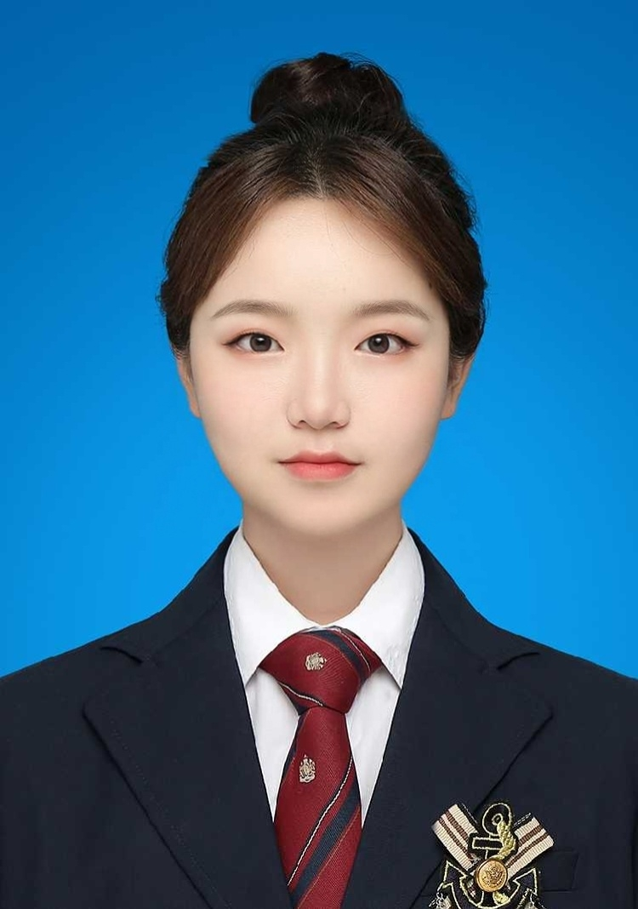

Simin Liu
My research interests lie at the intersection of artificial intelligence, physics, materials science, and biomedical engineering. I am particularly interested in applying machine learning and computational methods to interdisciplinary scientific and engineering problems.

About Me
I am an undergraduate student in Physics at Nanjing University of Posts and Telecommunications (NUPT), expected to graduate in 2027.
My research has primarily focused on machine-learning-assisted superconducting materials discovery. I have worked on interpretable machine learning, graph neural networks, and materials informatics for superconducting critical temperature prediction.
I am also exploring interdisciplinary research in biomedical signal processing, intelligent sensing, and neuromorphic devices. I enjoy learning new techniques and applying computational approaches to problems across different scientific fields.
Research Experience
AI-Assisted Discovery of Superconducting Materials
- Developing machine-learning models to predict superconducting critical temperature (Tc) and investigate the relationships among material composition, crystal structures, and superconducting properties.
- Constructed more than 300 physical descriptors from material composition and CIF crystal structures, and compared six regression models including Random Forest, XGBoost, and Gradient Boosting.
- Applied SHAP to investigate important physical factors affecting superconducting critical temperature. The XGBoost model achieved a test R2 of 0.745.
- Participated in developing HGTC-Net, a graph neural network incorporating superconducting category priors. Semantic gating improved the test R2 from 0.7448 for direct graph regression to 0.8809.
- This research has resulted in two first/co-first-author papers on machine learning for superconducting materials.
Rapid Calibration for Cuffless Blood Pressure Monitoring
- Investigating rapid calibration and drift compensation methods for long-term cuffless blood pressure monitoring using multimodal physiological signals.
- Processed physiological signals including photoplethysmography (PPG) and heart rate, and developed a preliminary pipeline covering signal preprocessing, feature extraction, and blood pressure prediction.
- Exploring personalized calibration using multimodal physiological information and adaptive calibration methods for signal drift during long-term monitoring.
Self-Powered Bidirectional Synaptic Device Based on Cs-Doped Perovskite/P3HT Heterojunction
- Investigated optoelectronic response and synaptic plasticity in Cs-doped perovskite/P3HT heterojunction devices.
- Conducted experimental data analysis and visualization under different optical powers, pulse widths, frequencies, and pulse numbers.
- Observed IPSC peaks of approximately 4500 nA and stable device responses across 50 repeated cycles.
- Contributed to manuscript writing, revision, scientific visualization, and figure preparation.
Literature Study on Superconducting Hydrides
- Reviewed recent progress in high-temperature superconducting hydrides, with particular emphasis on ternary hydrides and strategies for extending superconductivity toward lower pressures and ambient conditions.
- Participated in literature review, data collection, analysis, and manuscript preparation for a review published in Annalen der Physik.
Publications
Co-first author · Accepted Aug. 28, 2026
Education
Nanjing University of Posts and Telecommunications
- GPA: 3.93 / 5.0
- Average Score: 89.41 / 100
- Overall Rank: 1 / 67
- Major Rank: 2 / 67
Selected Honors & Awards
- Wiley China Excellent Author Development Program Award, 2026
- National Scholarship, 2025
- First-Class University Scholarship, 2024 & 2025
- Merit Student, 2024 & 2025
- Meritorious Winner, Mathematical Contest in Modeling (MCM), 2025
- Third Prize, Jiangsu Undergraduate Physics Experiment Competition, 2024 & 2025
- Outstanding Communist Youth League Member, 2024